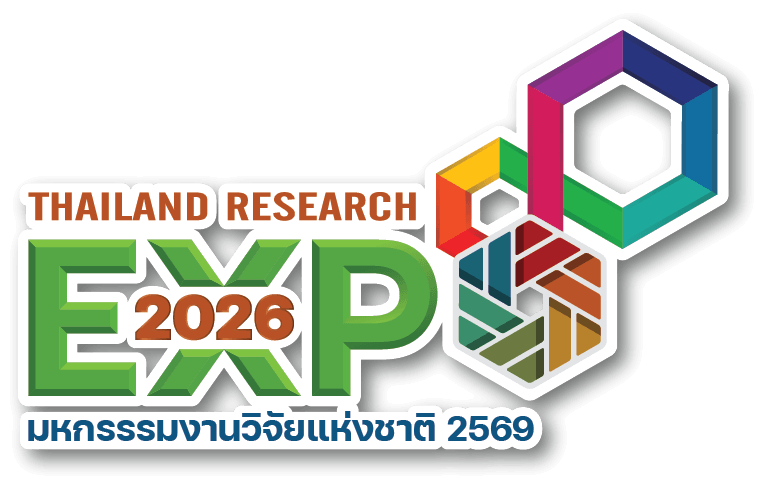

ปัญหาและช่องว่างตลาด
Problem Statement & Market Gap




ขาดแคลนบุคลากรแพทย์
อัตราส่วนแพทย์ต่อประชากรต่ำกว่าเกณฑ์ WHO โดยเฉพาะพื้นที่ห่างไกล ชนบทและภาคใต้
เข้าถึงบริการยาก
พื้นที่ห่างไกล ต้นทุนการเดินทางสูง ประชาชนไม่สามารถปรึกษาแพทย์ได้ทันเวลา
โรงพยาบาลแออัด
ไม่มีระบบ Triage เบื้องต้น ผู้ป่วยรอนาน แพทย์รับภาระงานสูง ระบบล่มช้า
LLM ไม่รองรับภาษาไทย
โมเดลทั่วไปถูกออกแบบสำหรับ EN/ZH ไม่เข้าใจบริบทวัฒนธรรม โรค และศัพท์การแพทย์ไทย
Market Gap: ยังไม่มี Thai Medical AI ที่ครบวงจร — Fine-tuned ภาษาไทย + RAG Knowledge Base + CoT + PDPA + Multimodal + Edge Deployment พร้อมกันในระบบเดียว
🎯 โอกาส: Thai Medical AI สำหรับคนไทยโดยเฉพาะ · ใช้ Open-source LLM ภาษาไทย · PDPA-compliant · ทำงาน Edge ได้ โดยไม่ต้องส่งข้อมูลขึ้น Cloud